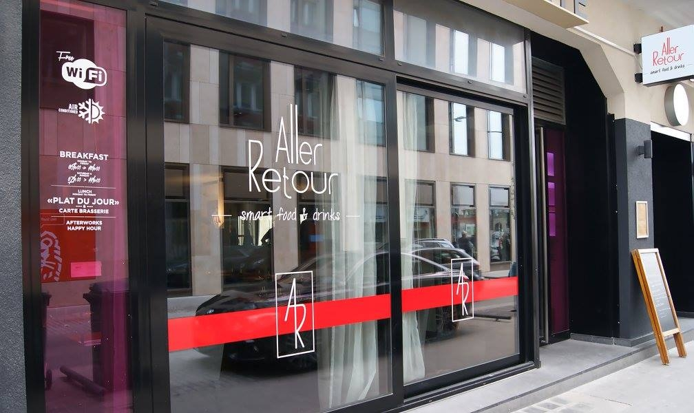

LUX → PAR🇫🇷

Paris
Le point de départ : une brasserie contemporaine. Plat du jour au déjeuner, poisson et pièce de bœuf à la carte, produits de saison travaillés avec soin — le classique français, sans la poussière.
Brasserie · déjeuner · carte du soir